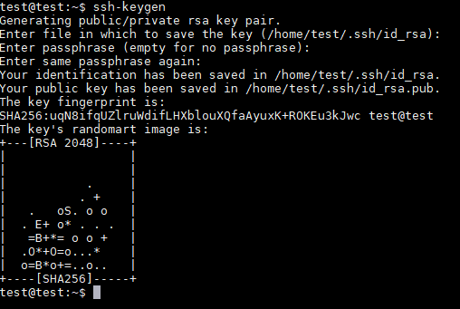
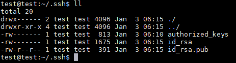
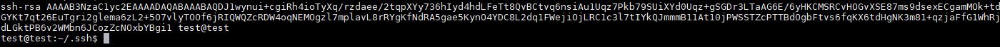
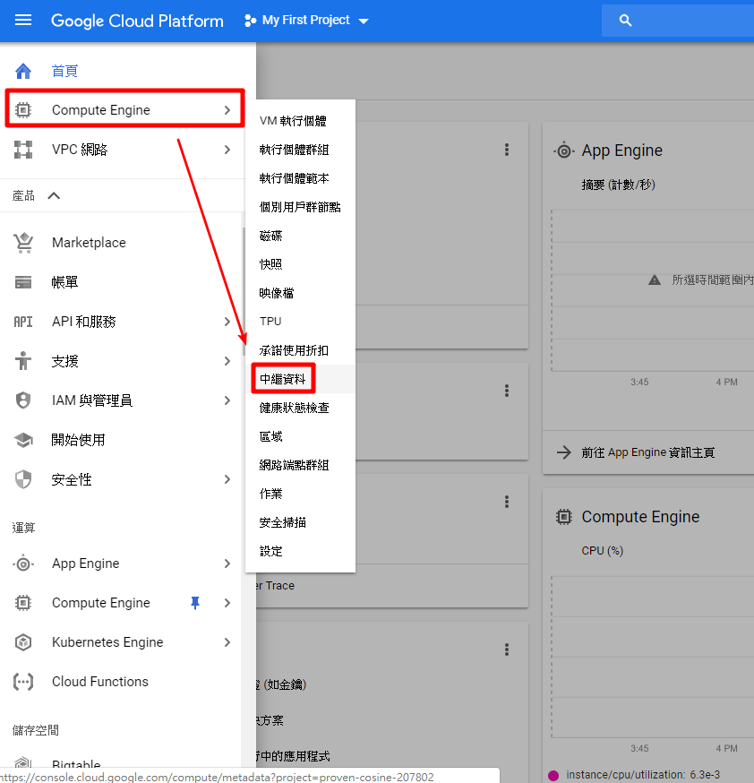
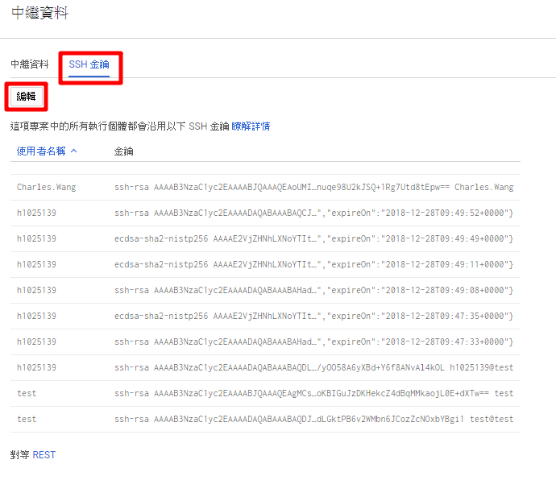
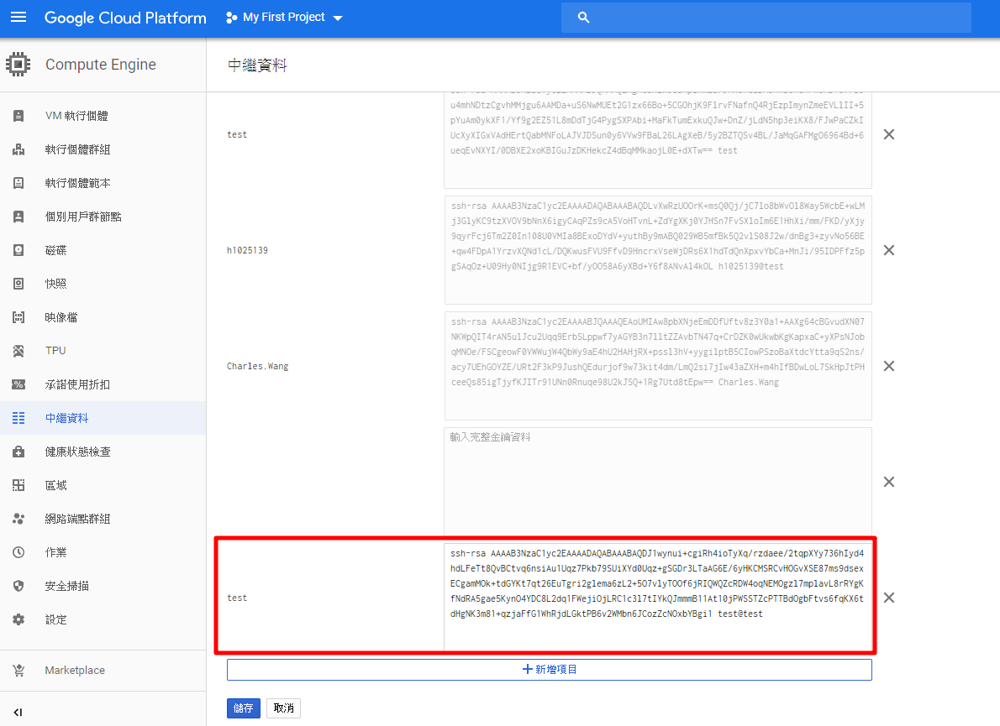
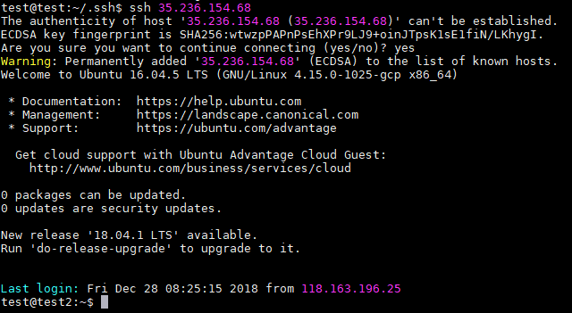

本文章將介紹 SSH 公開金鑰認證（Public Key Authentication）的使用方式，讓你不用打密碼就可以直接登入
使用版本 ubuntu 16.04
1. 指令產金鑰
1 | ssh-keygen |
產生金鑰過程中，會詢問一些問題對於一般的使用者而言，全部都使用預設值（直接按下 Enter 鍵）即可
首先指定金鑰儲存的位置，使用預設值即可直接按下 Enter 鍵
1 | Generating public/private rsa key pair. |
指定金鑰保護密碼，如果有設定密碼的話，以後每次使用都要輸入密碼，不設定就直接按下 Enter 鍵即可
1 | Enter passphrase (empty for no passphrase): |
再次輸入密碼，直接按下 Enter 鍵接著就會產生金鑰了
1 | Enter same passphrase again: |
產生的金鑰會有兩個檔案，位置在 /home/使用者名稱/.ssh
id_rsa.pub：公開金鑰（public key），這是可以對外公開的金鑰，之後要將它放在 GCP 上作認證使用
id_rsa：私密金鑰（private key），這是要保護好的金鑰，它等同於你的 Linux 密碼，放在自己的電腦中


2. 到 /home/test/.ssh/ 路徑下其中一個指令複製公鑰
1 | cat /home/test/.ssh/id_rsa.pub |

3. 到 GCP → Computer Engine → 中繼資料，點擊分頁 SSH 金鑰 → 編輯，把複製的公鑰新增上去



4. 下指令連線會詢問是否要連線輸入 yes，如下圖就是成功畫面
1 | ssh 要連線 ip |
